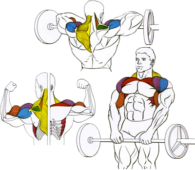

Базовое упражнения для проработки дельтовидных мышц, главным образом среднего пучка. Также задействуются трапециевидные мышцы.
Исходное положение:
Встать прямо. Снаряд внизу. Хват прямой. Расстояние между руками примерно два кулака.
Техника выполнения:
На выдохе поднять штангу к подбородку.
Задержать снаряд в верхнем положении.
На вдохе вернуть штангу в исходную позицию.
Рекомендации:
Локти всегда должны быть разведены в стороны и подниматься вертикально.
Спину и шею держать прямо, подбородок — горизонтально.
Гриф штанги должен подниматься именно к подбородку, то есть выше плеч.
Вес штанги не должен быть препятствием к соблюдению правильной техники упражнения.